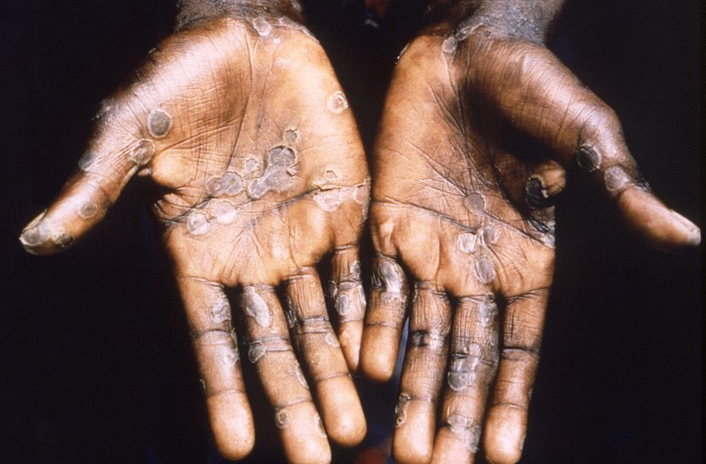
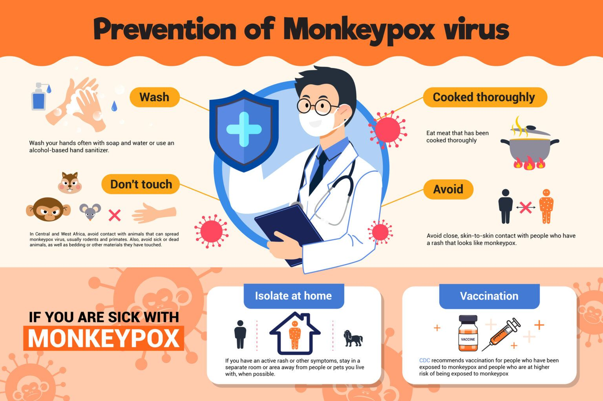
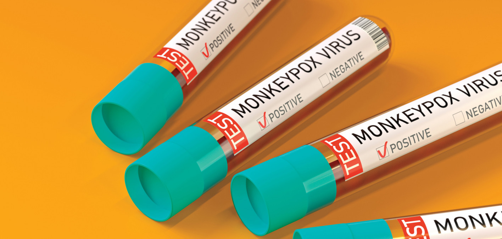

10 choses à savoir sur la variole

1. Qu’est-ce que la variole ?
La variole, anciennement appelée “monkeypox”, est une maladie virale causée par le virus de la variole du singe (MPXV). Ce virus appartient au genre Orthopoxvirus, de la famille des Poxviridae.
- Le virus a été isolé pour la première fois au Danemark en 1958 chez des singes d’Asie.
- Le premier cas humain a été signalé en République Démocratique du Congo (RDC) en 1970, dans la ville de Basankusu, province de l’Équateur.
2. Qui peut contracter la variole ?
Tout le monde peut contracter la variole. Elle se transmet :
- Par contact étroit avec une personne infectée.
- Par contact avec des animaux infectés (dans les zones endémiques).
- Par manipulation d’objets contaminés par le virus (literie, vêtements, etc.).
3. Quels sont les symptômes ?
Les symptômes apparaissent généralement 1 à 21 jours après l’exposition, avec une durée moyenne d’une semaine. Ils durent 2 à 4 semaines et incluent :
- Éruption cutanée.
- Fièvre.
- Mal de gorge et mal de tête.
- Douleurs musculaires et maux de dos.
- Faible niveau d’énergie.
- Ganglions lymphatiques enflés.
4. Qui est à risque de complications graves ?
Bien que la plupart des personnes se rétablissent complètement, certains groupes sont à risque accru de formes graves, notamment :
- Les nourrissons et jeunes enfants.
- Les personnes immunodéprimées, comme les personnes vivant avec le VIH non traité.
5. Que faire si vous pensez avoir la variole ?
- Consultez un médecin.
- Isolez-vous dans une pièce séparée, avec fenêtres ouvertes.
- Lavez-vous fréquemment les mains avec de l’eau et du savon ou un désinfectant.
- Couvrez les lésions et portez un masque en présence d’autres personnes.
- Maintenez votre peau sèche, sauf lors de bains chauds (avec bicarbonate de soude ou sels d’Epsom).
- Prenez des analgésiques comme le paracétamol ou l’ibuprofène si nécessaire.
6. Que ne faut-il pas faire ?
- Ne grattez pas les lésions ou ampoules, cela peut :
- Retarder la cicatrisation.
- Propager l’éruption à d’autres parties du corps.
- Provoquer des infections secondaires.
- Retarder la cicatrisation.

8. En quoi consiste le traitement ?
Le traitement de la variole vise à :
- Soulager les symptômes (notamment la douleur).
- Favoriser la cicatrisation des lésions.
- Prévenir les complications.
Des soins de soutien précoces sont essentiels pour une récupération rapide.
9. Qu’en est-il de la vaccination ?
La vaccination contre la variole peut aider à prévenir l’infection. Elle est particulièrement recommandée pour :
- Les personnes exposées à haut risque (travailleurs de santé, personnel de laboratoire).
- Les personnes vivant dans des zones endémiques ou touchées par des épidémies.
10. Restez vigilant face à la désinformation
- Partagez des informations fiables, issues de sources comme l’OMS ou les autorités sanitaires locales.
- Évitez les rumeurs ou affirmations non vérifiées, qui peuvent alimenter la peur et la désinformation.

Bon à savoir : mesures de prévention
Pour réduire le risque de contracter la variole, adoptez ces comportements :
- Évitez les contacts étroits
- Ne touchez pas une personne présentant des lésions cutanées visibles.
- Limitez les interactions peau à peau avec des personnes infectées.
- Ne touchez pas une personne présentant des lésions cutanées visibles.
- Pratiquez une bonne hygiène
- Lavez-vous fréquemment les mains avec de l’eau et du savon ou un désinfectant.
- Ne touchez pas votre visage sans vous être lavé les mains.
- Lavez-vous fréquemment les mains avec de l’eau et du savon ou un désinfectant.
- Utilisez des équipements de protection
- Portez des gants, des masques et des protections si vous soignez une personne infectée.
- Jetez les équipements usagés de manière appropriée.
- Portez des gants, des masques et des protections si vous soignez une personne infectée.
- Évitez les objets contaminés
- Ne partagez pas literie, vêtements ou serviettes avec une personne infectée.
- Manipulez avec précaution les objets potentiellement contaminés.
- Ne partagez pas literie, vêtements ou serviettes avec une personne infectée.
- Attention aux animaux
- Évitez tout contact avec des animaux susceptibles d’être infectés (rongeurs, primates).
- Vaccinez-vous si vous êtes à risque élevé
- Consultez les recommandations locales concernant le vaccin contre la variole.
- Informez-vous
- Restez à jour sur les directives des autorités sanitaires.
Références
- Organisation Mondiale de la Santé (OMS)
- Informations générales sur la variole.
https://www.who.int/fr
- Informations générales sur la variole.
- CDC (Centers for Disease Control and Prevention)
- Recommandations de prévention et vaccination.
https://www.cdc.gov/poxvirus/monkeypox
- Recommandations de prévention et vaccination.
- Institut Pasteur
- Études sur les virus de la famille Poxviridae.
https://www.pasteur.fr
- Études sur les virus de la famille Poxviridae.
- Ministère de la Santé, RDC
- Lignes directrices sur la prévention et le contrôle de la variole.
- Public Health England
- Guide sur la gestion des cas de variole.
https://www.gov.uk
- Guide sur la gestion des cas de variole.
| Date | Titre |
|---|
7. Comment prévenir la transmission ?
Les personnes atteintes doivent :
- S’isoler à domicile ou à l’hôpital (selon la gravité).
- Couvrir leurs plaies et porter un masque médical en présence d’autres personnes.
- Désinfecter régulièrement les surfaces partagées.